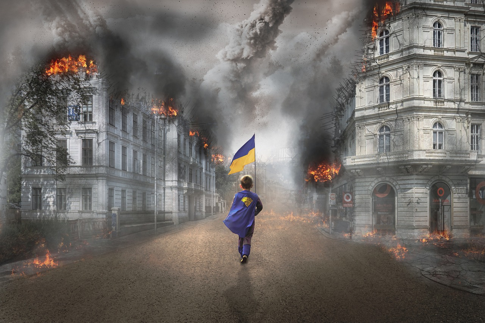

«Wer sagt, dass die Ukraine in zwei Jahren noch existiert?»
Seit mehreren Monaten herrscht in der Ukraine Krieg. Unterdessen
warnen die UN vor massiven globalen Auswirkungen des Krieges. 20
Minuten liefert die News zum Krieg.
Der stellvertretende Vorsitzende des russischen Sicherheitsrates,
Dmitrij Medwedew, bezweifelt die zukünftige Existenz der Ukraine auf
der Weltkarte, wie die russische Nachrichtenagentur «Ria Novosti»
berichtet. «Und wer sagt, dass die Ukraine in zwei Jahren überhaupt
noch auf der Weltkarte existieren wird? Aber das ist den Amerikanern
egal - sie sind so sehr in das 'Anti-Russland'-Projekt investiert,
dass ihnen alles andere egal ist», schrieb er auf Telegram.
Zudem zweifelte der ehemalige Präsident Russlands und
Putin-Vertraute an, dass die Ukraine ihre wirtschaftlichen
Verpflichtungen gegenüber den «Herren in Übersee» – den USA –
erfüllen kann. Dabei geht es auch um den Kauf von Flüssiggas für die
Ukraine. «Ohne westliches Flüssiggas wird die Ukraine einfach
erfrieren», sagte Medwedew. (fis)
Angesichts der verlustreichen Abwehrschlacht gegen Russland im
Donbass hat der ukrainische Präsident Wolodimir Selenski seine
Truppen zum Durchhalten aufgerufen. «Das ist unser Staat. Dort im
Donbass durchzuhalten ist lebenswichtig», sagte Selenski in seiner
abendlichen Videoansprache am Dienstag. «Es gibt Verluste, und sie
sind schmerzhaft.» Doch an der Front im Osten des Landes entscheide
sich, welche Seite in den kommenden Wochen dominieren werde. Je
höher die Verluste des Feindes dort seien, desto weniger Kraft habe
er, die Aggression fortzusetzen, sagte Selenski. In dem Kohle- und
Stahlrevier Donbass wehren sich ukrainische Truppen seit Tagen
verzweifelt gegen die Eroberung der Stadt Sjewjerodonezk durch
Russland. Die ukrainische Armee erleide auch bei Charkiw Verluste,
sagte Selenski. Aber es sei wichtig, die russischen Truppen von der
zweitgrössten Stadt des Landes abzudrängen. Der Präsident wies den
Oberkommandierenden Walerij Saluschnyj an, Berichten über angeblich
mangelnde Schutzausrüstung der ukrainischen Soldaten nachzugehen.
«Alle in der Kampfzone müssen mit dem Notwendigen zu ihrem Schutz
ausgerüstet sein», sagte Selenski. (DPA)
Quelle: 20Minuten
